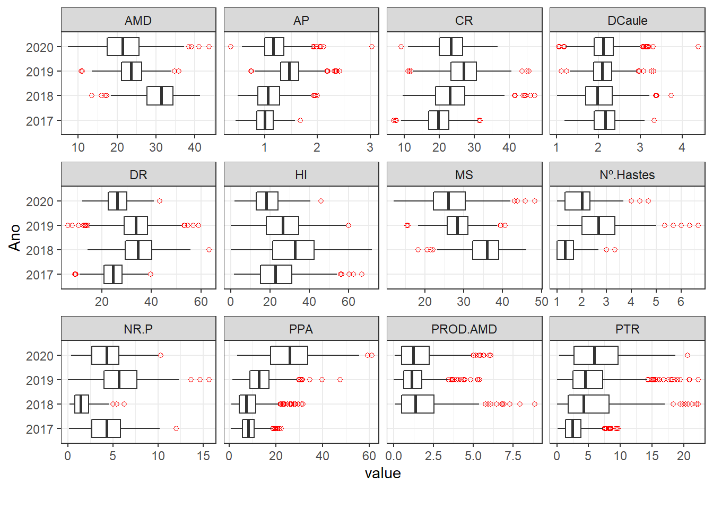
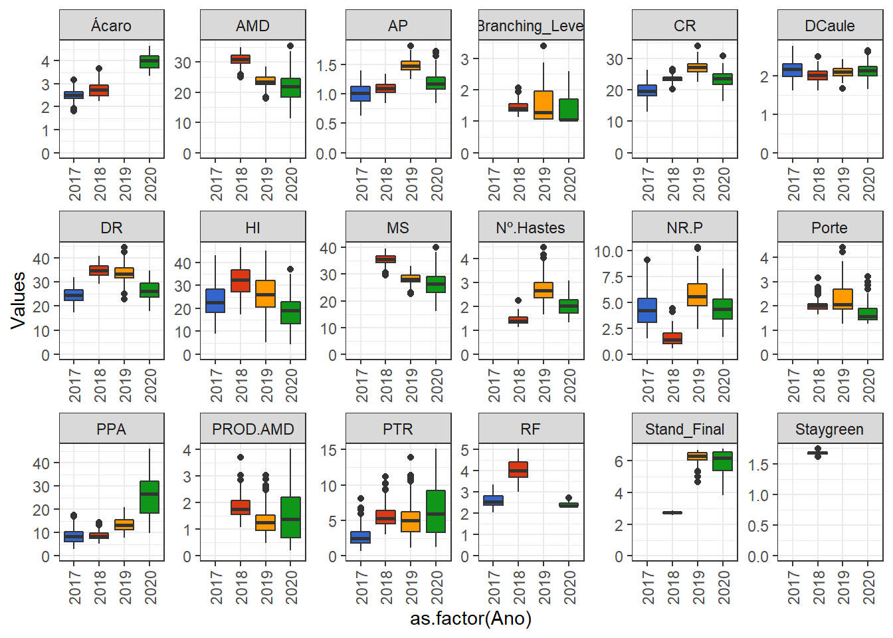
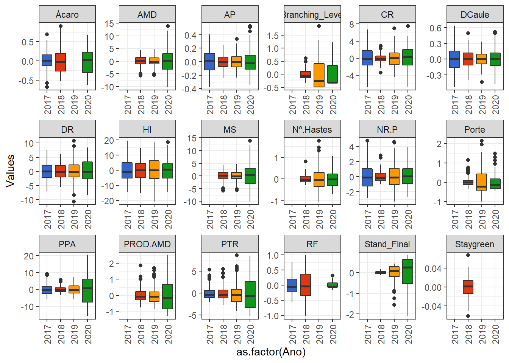

Last updated: 2022-11-17
Checks: 6 1
Knit directory:
Genomic-Selection-for-Drought-Tolerance-Using-Genome-Wide-SNPs-in-Casava/
This reproducible R Markdown analysis was created with workflowr (version 1.7.0). The Checks tab describes the reproducibility checks that were applied when the results were created. The Past versions tab lists the development history.
The R Markdown file has unstaged changes. To know which version of
the R Markdown file created these results, you’ll want to first commit
it to the Git repo. If you’re still working on the analysis, you can
ignore this warning. When you’re finished, you can run
wflow_publish to commit the R Markdown file and build the
HTML.
Great job! The global environment was empty. Objects defined in the global environment can affect the analysis in your R Markdown file in unknown ways. For reproduciblity it’s best to always run the code in an empty environment.
The command set.seed(20221020) was run prior to running
the code in the R Markdown file. Setting a seed ensures that any results
that rely on randomness, e.g. subsampling or permutations, are
reproducible.
Great job! Recording the operating system, R version, and package versions is critical for reproducibility.
Nice! There were no cached chunks for this analysis, so you can be confident that you successfully produced the results during this run.
Great job! Using relative paths to the files within your workflowr project makes it easier to run your code on other machines.
Great! You are using Git for version control. Tracking code development and connecting the code version to the results is critical for reproducibility.
The results in this page were generated with repository version 6cc4d23. See the Past versions tab to see a history of the changes made to the R Markdown and HTML files.
Note that you need to be careful to ensure that all relevant files for
the analysis have been committed to Git prior to generating the results
(you can use wflow_publish or
wflow_git_commit). workflowr only checks the R Markdown
file, but you know if there are other scripts or data files that it
depends on. Below is the status of the Git repository when the results
were generated:
Ignored files:
Ignored: .Rproj.user/
Ignored: data/allchrAR08.txt
Untracked files:
Untracked: data/~$Phenotyping.xlsx
Untracked: data/~$genomic selection.pptx
Untracked: output/accuracy_multi.jpeg
Unstaged changes:
Modified: analysis/GWS.Rmd
Deleted: analysis/figure/gws-multi-enviroment.Rmd/unnamed-chunk-21-1.png
Deleted: analysis/figure/gws-multi-enviroment.Rmd/unnamed-chunk-22-1.png
Deleted: analysis/figure/gws-multi-enviroment.Rmd/unnamed-chunk-6-1.png
Modified: analysis/gws-multi-enviroment.Rmd
Modified: analysis/phenotype_multi.Rmd
Modified: data/genomic selection.pptx
Modified: output/BLUPS_par.Rdata
Modified: output/accuracy_multi.png
Modified: output/resultMM.Rdata
Modified: output/results_cv.csv
Note that any generated files, e.g. HTML, png, CSS, etc., are not included in this status report because it is ok for generated content to have uncommitted changes.
These are the previous versions of the repository in which changes were
made to the R Markdown (analysis/phenotype_multi.Rmd) and
HTML (docs/phenotype_multi.html) files. If you’ve
configured a remote Git repository (see ?wflow_git_remote),
click on the hyperlinks in the table below to view the files as they
were in that past version.
| File | Version | Author | Date | Message |
|---|---|---|---|---|
| Rmd | 6cc4d23 | WevertonGomesCosta | 2022-11-17 | Update |
| html | 6cc4d23 | WevertonGomesCosta | 2022-11-17 | Update |
Load Libraries
library(kableExtra)
library(tidyverse)
library(metan)
require(ComplexHeatmap)
library(data.table)
library(readxl)
library(DataExplorer)
library(doParallel)
theme_set(theme_bw())Como já relaizamos a limpeza dos dados para a análise conjunta, vamos agora buscar os dados limpos.
pheno <- read.csv("data/pheno_clean.csv")We will perform some manipulations to adjust our database and to facilitate the visualization of the exploratory analysis.
First, let’s convert the variables that are character into factors. Then we will convert the variables that refer to the grades to integers and then into factors. After that, let’s create the variable ANo.Bloco for nesting in the model to obtain the BLUPs.
pheno <- pheno %>%
mutate_if(is.character, as.factor) %>%
mutate_if(is.integer, as.factor) %>%
mutate_at("Ano.Bloco", as.factor)Como vimos anteriormente, nosso dataset possui número de clones avaliados diferentes por ano. Let’s visualize this, to see how many clones were evaluated according to the number of Anos.
pheno %>%
count(Ano, Clone) %>%
count(Clone) %>%
count(n) %>%
kbl(
escape = F,
align = 'c',
col.names = c("N of Environments", "Number of genotypes")
) %>%
kable_classic(
"hover",
full_width = F,
position = "center",
fixed_thead = T
)Storing counts in `nn`, as `n` already present in input
i Use `name = "new_name"` to pick a new name.| N of Environments | Number of genotypes |
|---|---|
| 1 | 349 |
| 2 | 72 |
| 3 | 20 |
| 4 | 5 |
Only 5 clones were evaluated in all Anos.
Also, note that the Anos differ in the number of clones evaluated:
pheno %>%
count(Ano, Clone) %>%
group_by(Ano) %>%
summarise(length(Clone)) %>%
kbl(
escape = F,
align = 'c',
col.names = c("Environments", "Number of genotypes")) %>%
kable_classic(
"hover",
full_width = F,
position = "center",
fixed_thead = T
)| Environments | Number of genotypes |
|---|---|
| 2017 | 165 |
| 2018 | 137 |
| 2019 | 133 |
| 2020 | 138 |
We can check how many clones we have in common between the Anos:
pheno2<- pheno %>%
count(Ano, Clone)
genmat = model.matrix( ~ -1 + Clone, data = pheno2)
envmat = model.matrix( ~ -1 + Ano, data = pheno2)
genenvmat = t(envmat) %*% genmat
genenvmat %*% t(genenvmat) %>%
kbl(escape = F, align = 'c') %>%
kable_classic(
"hover",
full_width = F,
position = "center",
fixed_thead = T
)| Ano2017 | Ano2018 | Ano2019 | Ano2020 | |
|---|---|---|---|---|
| Ano2017 | 165 | 42 | 22 | 14 |
| Ano2018 | 42 | 137 | 39 | 16 |
| Ano2019 | 22 | 39 | 133 | 29 |
| Ano2020 | 14 | 16 | 29 | 138 |
The Ano 2020 has a lower number of clones in common, however, we will keep it for the analysis.
We must evaluate the descriptive statistics by Ano for the variables.
desc_stat(pheno, by = Ano) %>%
kbl(escape = F, align = 'c') %>%
kable_classic(
"hover",
full_width = F,
position = "center",
fixed_thead = T
)| Ano | variable | cv | max | mean | median | min | sd.amo | se | ci.t | n.valid |
|---|---|---|---|---|---|---|---|---|---|---|
| 2017 | AMD | NA | -Inf | NaN | NA | Inf | 0.0000 | NA | NaN | 0 |
| 2017 | AP | 21.0398 | 1.6767 | 1.0023 | 1.0000 | 0.4500 | 0.2109 | 0.0084 | 0.0165 | 632 |
| 2017 | CR | 21.5823 | 31.6667 | 19.7236 | 19.6667 | 7.0000 | 4.2568 | 0.1719 | 0.3376 | 613 |
| 2017 | DCaule | 16.7774 | 3.3333 | 2.1581 | 2.1667 | 1.2000 | 0.3621 | 0.0144 | 0.0284 | 629 |
| 2017 | DR | 21.0039 | 39.6900 | 24.4889 | 24.4733 | 8.9867 | 5.1436 | 0.2077 | 0.4080 | 613 |
| 2017 | HI | 48.2942 | 66.6827 | 23.5691 | 22.7255 | 1.5744 | 11.3825 | 0.4612 | 0.9058 | 609 |
| 2017 | MS | NA | -Inf | NaN | NA | Inf | 0.0000 | NA | NaN | 0 |
| 2017 | Nº.Hastes | NA | -Inf | NaN | NA | Inf | 0.0000 | NA | NaN | 0 |
| 2017 | NR.P | 48.8708 | 12.0000 | 4.3530 | 4.3330 | 0.1250 | 2.1273 | 0.0860 | 0.1689 | 612 |
| 2017 | PPA | 45.4973 | 22.2220 | 8.4677 | 8.0750 | 0.6940 | 3.8526 | 0.1542 | 0.3029 | 624 |
| 2017 | PROD.AMD | NA | -Inf | NaN | NA | Inf | 0.0000 | NA | NaN | 0 |
| 2017 | PTR | 66.8379 | 9.6700 | 2.7517 | 2.4310 | 0.1160 | 1.8392 | 0.0743 | 0.1459 | 613 |
| 2018 | AMD | 15.6937 | 41.4284 | 30.7820 | 31.3500 | 13.5318 | 4.8309 | 0.2794 | 0.5498 | 299 |
| 2018 | AP | 28.0409 | 1.9967 | 1.0953 | 1.0600 | 0.4867 | 0.3071 | 0.0159 | 0.0313 | 373 |
| 2018 | CR | 27.1625 | 47.3333 | 23.6102 | 23.0000 | 9.5000 | 6.4131 | 0.3715 | 0.7311 | 298 |
| 2018 | DCaule | 22.3814 | 3.7317 | 2.0189 | 1.9800 | 1.0133 | 0.4519 | 0.0235 | 0.0463 | 369 |
| 2018 | DR | 23.3943 | 63.3033 | 34.7356 | 34.4400 | 14.1300 | 8.1262 | 0.4707 | 0.9264 | 298 |
| 2018 | HI | 42.0024 | 71.9673 | 32.2503 | 32.6091 | 0.0000 | 13.5459 | 0.7719 | 1.5188 | 308 |
| 2018 | MS | 13.6086 | 46.0784 | 35.3819 | 36.0000 | 18.1818 | 4.8150 | 0.2785 | 0.5480 | 299 |
| 2018 | Nº.Hastes | 33.4885 | 3.3333 | 1.4379 | 1.3333 | 1.0000 | 0.4815 | 0.0249 | 0.0490 | 373 |
| 2018 | NR.P | 63.2913 | 6.2500 | 1.6249 | 1.4085 | 0.1900 | 1.0284 | 0.0588 | 0.1157 | 306 |
| 2018 | PPA | 69.0625 | 31.6000 | 8.7610 | 7.2000 | 1.0000 | 6.0506 | 0.3022 | 0.5940 | 401 |
| 2018 | PROD.AMD | 91.8742 | 8.8669 | 1.8356 | 1.3539 | 0.0839 | 1.6864 | 0.0984 | 0.1936 | 294 |
| 2018 | PTR | 86.6619 | 22.2000 | 5.6274 | 4.2500 | 0.0000 | 4.8768 | 0.2770 | 0.5450 | 310 |
| 2019 | AMD | 16.5407 | 35.9441 | 23.6326 | 23.6328 | 10.7346 | 3.9090 | 0.1745 | 0.3428 | 502 |
| 2019 | AP | 19.1125 | 2.4233 | 1.4843 | 1.4633 | 0.7400 | 0.2837 | 0.0123 | 0.0243 | 528 |
| 2019 | CR | 21.1089 | 45.6667 | 27.1361 | 27.0000 | 11.0000 | 5.7281 | 0.2529 | 0.4969 | 513 |
| 2019 | DCaule | 15.7037 | 3.3203 | 2.1061 | 2.0963 | 1.1197 | 0.3307 | 0.0144 | 0.0283 | 528 |
| 2019 | DR | 24.3155 | 58.9267 | 33.4940 | 33.6500 | 6.1200 | 8.1442 | 0.3596 | 0.7064 | 513 |
| 2019 | HI | 47.3227 | 60.1626 | 26.1706 | 26.6117 | 0.0000 | 12.3846 | 0.5390 | 1.0588 | 528 |
| 2019 | MS | 13.8212 | 40.5941 | 28.2826 | 28.2828 | 15.3846 | 3.9090 | 0.1745 | 0.3428 | 502 |
| 2019 | Nº.Hastes | 37.3740 | 6.6667 | 2.7113 | 2.6667 | 1.0000 | 1.0133 | 0.0441 | 0.0867 | 527 |
| 2019 | NR.P | 47.7261 | 15.6670 | 5.7402 | 5.6670 | 0.0000 | 2.7396 | 0.1192 | 0.2342 | 528 |
| 2019 | PPA | 47.4901 | 47.5710 | 13.4607 | 12.7735 | 1.2860 | 6.3925 | 0.2782 | 0.5465 | 528 |
| 2019 | PROD.AMD | 72.5347 | 5.4021 | 1.3211 | 1.1082 | 0.0000 | 0.9583 | 0.0428 | 0.0841 | 501 |
| 2019 | PTR | 74.3122 | 22.2000 | 5.2850 | 4.5000 | 0.0000 | 3.9274 | 0.1709 | 0.3358 | 528 |
| 2020 | AMD | 27.3600 | 43.6860 | 21.5594 | 21.3900 | 7.3260 | 5.8986 | 0.2569 | 0.5048 | 527 |
| 2020 | AP | 24.0927 | 3.0333 | 1.1945 | 1.1600 | 0.3600 | 0.2878 | 0.0124 | 0.0243 | 543 |
| 2020 | CR | 18.9730 | 36.6667 | 23.2345 | 23.3333 | 9.0000 | 4.4083 | 0.1909 | 0.3751 | 533 |
| 2020 | DCaule | 17.5042 | 4.3733 | 2.1321 | 2.1207 | 1.0547 | 0.3732 | 0.0160 | 0.0315 | 543 |
| 2020 | DR | 20.5858 | 43.2733 | 26.2101 | 26.1800 | 11.8533 | 5.3956 | 0.2337 | 0.4591 | 533 |
| 2020 | HI | 43.3204 | 45.9340 | 18.6129 | 18.0486 | 1.9608 | 8.0632 | 0.3496 | 0.6867 | 532 |
| 2020 | MS | 22.5059 | 48.3360 | 26.2094 | 26.0400 | 11.9760 | 5.8986 | 0.2569 | 0.5048 | 527 |
| 2020 | Nº.Hastes | 37.1507 | 4.6667 | 2.0463 | 2.0000 | 1.0000 | 0.7602 | 0.0326 | 0.0641 | 543 |
| 2020 | NR.P | 47.0839 | 10.3330 | 4.3060 | 4.3330 | 0.3330 | 2.0274 | 0.0881 | 0.1730 | 530 |
| 2020 | PPA | 42.7475 | 61.1670 | 25.8653 | 25.9165 | 3.3330 | 11.0568 | 0.4794 | 0.9417 | 532 |
| 2020 | PROD.AMD | 81.2220 | 6.0724 | 1.5211 | 1.2326 | 0.0483 | 1.2354 | 0.0540 | 0.1060 | 524 |
| 2020 | PTR | 68.4455 | 20.5670 | 6.5246 | 5.9000 | 0.4000 | 4.4658 | 0.1934 | 0.3800 | 533 |
What draws attention in this table are the high cv for some characteristics, especially: HI, Nº of Stems, NR.P, PPA, PROD.AMD and PTR.
This may be due to the presence of outliers, let’s inspect the entire dataset to assess whether there are outliers:
inspect(pheno %>%
select(-c(Clone)), verbose = FALSE) %>% kbl(escape = F, align = 'c') %>%
kable_classic(
"hover",
full_width = F,
position = "center",
fixed_thead = T
)| Variable | Class | Missing | Levels | Valid_n | Min | Median | Max | Outlier | Text |
|---|---|---|---|---|---|---|---|---|---|
| Ano | factor | No | 4 | 2292 | NA | NA | NA | NA | NA |
| Bloco | factor | No | 4 | 2292 | NA | NA | NA | NA | NA |
| NR.P | numeric | Yes |
|
1976 | 0.00 | 4.00 | 15.67 | 16 | NA |
| PTR | numeric | Yes |
|
1984 | 0.00 | 3.70 | 22.20 | 76 | NA |
| PPA | numeric | Yes |
|
2085 | 0.69 | 11.17 | 61.17 | 89 | NA |
| MS | numeric | Yes |
|
1328 | 11.98 | 28.80 | 48.34 | 6 | NA |
| PROD.AMD | numeric | Yes |
|
1319 | 0.00 | 1.21 | 8.87 | 49 | NA |
| AP | numeric | Yes |
|
2076 | 0.36 | 1.16 | 3.03 | 23 | NA |
| HI | numeric | Yes |
|
1977 | 0.00 | 23.21 | 71.97 | 14 | NA |
| AMD | numeric | Yes |
|
1328 | 7.33 | 24.15 | 43.69 | 6 | NA |
| Porte | factor | Yes | 5 | 1618 | NA | NA | NA | NA | NA |
| RF | factor | Yes | 6 | 2080 | NA | NA | NA | NA | NA |
| CR | numeric | Yes |
|
1957 | 7.00 | 23.00 | 47.33 | 19 | NA |
| DR | numeric | Yes |
|
1957 | 6.12 | 28.17 | 63.30 | 32 | NA |
| DCaule | numeric | Yes |
|
2069 | 1.01 | 2.10 | 4.37 | 22 | NA |
| Ácaro | factor | Yes | 5 | 2074 | NA | NA | NA | NA | NA |
| Nº.Hastes | numeric | Yes |
|
1443 | 1.00 | 2.00 | 6.67 | 20 | NA |
| Stand_Final | factor | Yes | 8 | 1444 | NA | NA | NA | NA | NA |
| Branching_Level | factor | Yes | 5 | 1619 | NA | NA | NA | NA | NA |
| Staygreen | factor | Yes | 3 | 1623 | NA | NA | NA | NA | NA |
| Ano.Bloco | factor | No | 16 | 2292 | NA | NA | NA | NA | NA |
Confirming what was described before, most variables with high cv have many outliers and therefore we will exclude them in the loop to obtain the blups.
Como nosso objetivo agora é realizar a análise dos blups individuais para cada ano, vamos avaliar cada variável por ano
plot_boxplot(
pheno,
by = "Ano",
ggtheme = theme_bw(),
nrow = 5L,
ncol = 4L,
geom_boxplot_args = list("outlier.colour" = "red",
"outlier.shape" = 1))
Algumas variáveis não apresentam dados para o ano de 2017. Além disso, as variáveis RF e Ácaro apresentam discrepância na distribuição dos dados para o ano 2019, isso também vale para Sataygreen nos anos de 2019 e 2020.
Nesse caso, vamos excluir esses anos para essas variáveis.
First, I’m going to create a function to get the blups by Ano and some parameters from our model.
BLUPS_par_ind <- function(model, trait) {
BLUP <- ranef(model, condVar = TRUE)$Clone
PEV <-
c(attr(BLUP, "postVar")) # PEV is a vector of error variances associated with each individual BLUP... # it tells you about how confident you should be in the estimate of an individual CLONE's BLUP value.
Clone.var <-
c(VarCorr(model)$Clone) # Extract the variance component for CLONE
ResidVar <-
(attr(VarCorr(model), "sc")) ^ 2 # Extract the residual variance component
# You will need a line like the one above for every random effect (not for fixed effects)
out <-
BLUP / (1 - (PEV / Clone.var)) # This is the actual de-regress part (the BLUP for CLONE is divided by (1 - PEV/CLONE.var))
r2 <-
1 - (PEV / Clone.var) # Reliability: a confidence value for a BLUP (0 to 1 scale)
H2 = Clone.var / (Clone.var + ResidVar) # An estimate of the broad-sense heritability, must change this formula when you change the model analysis
wt = (1 - H2) / ((0.1 + (1 - r2) / r2) * H2) # Weights for each de-regressed BLUP
# There is a paper the determined this crazy formula, Garrick et al. 2009. I wouldn't pay much attn. to it.
# These weights will be used in the second-step (e.g. cross-validation) to account for what we've done in this step
# The weights will be fit as error variances associated with each residual value
VarComps <- as.data.frame(VarCorr(model))
return(
list(
Trait = trait,
drgBLUP = out,
BLUP = BLUP,
weights = wt,
varcomps = VarComps,
H2 = H2,
Reliability = r2,
model = model
)
)
}
save(BLUPS_par_ind, file = "output/BLUPS_par_ind.Rdata")Here we have to remember that we have outliers for some characteristics and also that we must exclude the Ano 2017 for some.
I’m going to create a loop where I inform which characteristics where this Ano should be excluded and also use the function to remove outliers.
Let’s convert all variables to numeric now.
traits <- colnames(pheno)[4:(ncol(pheno)-1)]
pheno<- pheno %>%
mutate_at(traits, as.numeric)Now let’s perform the mixed model analysis to each Ano.
load("output/BLUPS_par_ind.Rdata")
registerDoParallel(cores = 6) # Specify the number of cores (my lab computer has 8; I will use 6 of them)Ano 2017
data2017 <- pheno %>%
filter(Ano == 2017) %>%
select(where(~sum(!is.na(.)) > 0)) %>%
droplevels()
traits <- colnames(data2017)[4:(ncol(data2017)-1)]
resultMM2017 <- foreach(a = traits, i = icount(), .inorder = TRUE) %dopar% {
require(lme4)
require(dplyr)
library(purrr)
# Deletion of the outliers found
outliers <- boxplot(data2017[i+3], plot = FALSE)$out
if(!is_empty(outliers)){
data <- filter(data2017,data2017[i+3] != outliers)
}
model <- lmer(data = data,
formula = get(traits[i]) ~ (1 |Clone) + Ano.Bloco) # Clone are random
result <- BLUPS_par_ind(model, traits[i])
}
BLUPS_2017 <-
data.frame(Clone = unique(data2017$Clone),
Ano = 2017,
stringsAsFactors = F)
H2_2017 <- data.frame(H2 = "H2",
Ano = 2017,
stringsAsFactors = F)
varcomp_2017 <-
data.frame(
Ano = 2017,
grp = c("Clone", "Residual"),
stringsAsFactors = F
)
# Here we will get the BLUPS for each clone
for (i in 1:length(resultMM2017)) {
data <-
data.frame(Clone = rownames(resultMM2017[[i]]$BLUP),
stringsAsFactors = F)
data[, resultMM2017[[i]]$Trait] <- resultMM2017[[i]]$BLUP
BLUPS_2017 <- merge(BLUPS_2017, data, by = "Clone", all.x = T)
H2_2017[, resultMM2017[[i]]$Trait] <- resultMM2017[[i]]$H2
colnames(resultMM2017[[i]]$varcomps) <-
c(
"grp",
"var1",
"var2",
paste("vcov", resultMM2017[[i]]$Trait, sep = "."),
paste("sdcor", resultMM2017[[i]]$Trait, sep = ".")
)
varcomp_2017 <- varcomp_2017 %>%
right_join(resultMM2017[[i]]$varcomps)
}Joining, by = "grp"
Joining, by = c("grp", "var1", "var2")
Joining, by = c("grp", "var1", "var2")
Joining, by = c("grp", "var1", "var2")
Joining, by = c("grp", "var1", "var2")
Joining, by = c("grp", "var1", "var2")
Joining, by = c("grp", "var1", "var2")
Joining, by = c("grp", "var1", "var2")
Joining, by = c("grp", "var1", "var2")
Joining, by = c("grp", "var1", "var2")rownames(BLUPS_2017) <- BLUPS_2017$CloneAno 2018
data2018 <- pheno %>%
filter(Ano == 2018) %>%
select(where(~sum(!is.na(.)) > 0)) %>%
droplevels()
traits <- colnames(data2018)[4:(ncol(data2018)-1)]
resultMM2018 <- foreach(a = traits, i = icount(), .inorder = TRUE) %dopar% {
require(lme4)
require(dplyr)
library(purrr)
# Deletion of the outliers found
outliers <- boxplot(data2018[i+3], plot = FALSE)$out
if(!is_empty(outliers)){
data <- filter(data2018,data2018[i+3] != outliers)
}
model <- lmer(data = data,
formula = get(traits[i]) ~ (1 |Clone) + Ano.Bloco) # Clone are random
result <- BLUPS_par_ind(model, traits[i])
}
BLUPS_2018 <-
data.frame(Clone = unique(data2018$Clone),
Ano = 2018, stringsAsFactors = F)
H2_2018 <- data.frame(H2 = "H2",
Ano = 2018,
stringsAsFactors = F)
varcomp_2018 <-
data.frame(
Ano = 2018,
grp = c("Clone", "Residual"),
stringsAsFactors = F
)
# Here we will get the BLUPS for each clone
for (i in 1:length(resultMM2018)) {
data <-
data.frame(Clone = rownames(resultMM2018[[i]]$BLUP),
stringsAsFactors = F)
data[, resultMM2018[[i]]$Trait] <- resultMM2018[[i]]$BLUP
BLUPS_2018 <- merge(BLUPS_2018, data, by = "Clone", all.x = T)
H2_2018[, resultMM2018[[i]]$Trait] <- resultMM2018[[i]]$H2
colnames(resultMM2018[[i]]$varcomps) <-
c(
"grp",
"var1",
"var2",
paste("vcov", resultMM2018[[i]]$Trait, sep = "."),
paste("sdcor", resultMM2018[[i]]$Trait, sep = ".")
)
varcomp_2018 <- varcomp_2018 %>%
right_join(resultMM2018[[i]]$varcomps)
}Joining, by = "grp"
Joining, by = c("grp", "var1", "var2")
Joining, by = c("grp", "var1", "var2")
Joining, by = c("grp", "var1", "var2")
Joining, by = c("grp", "var1", "var2")
Joining, by = c("grp", "var1", "var2")
Joining, by = c("grp", "var1", "var2")
Joining, by = c("grp", "var1", "var2")
Joining, by = c("grp", "var1", "var2")
Joining, by = c("grp", "var1", "var2")
Joining, by = c("grp", "var1", "var2")
Joining, by = c("grp", "var1", "var2")
Joining, by = c("grp", "var1", "var2")
Joining, by = c("grp", "var1", "var2")
Joining, by = c("grp", "var1", "var2")
Joining, by = c("grp", "var1", "var2")
Joining, by = c("grp", "var1", "var2")
Joining, by = c("grp", "var1", "var2")rownames(BLUPS_2018) <- BLUPS_2018$CloneAno 2019
Nesse ano vamos eliminar excluir da análise as variáveis RF, Ácaro e Sataygren devido a baixa dispersão dos dados.
data2019 <- pheno %>%
filter(Ano == 2019) %>%
select(where(~sum(!is.na(.)) > 0)) %>%
select(-c("RF", "Ácaro" , "Staygreen")) %>%
droplevels()
traits <- colnames(data2019)[4:(ncol(data2019)-1)]
resultMM2019 <- foreach(a = traits, i = icount(), .inorder = TRUE) %dopar% {
require(lme4)
require(dplyr)
library(purrr)
# Deletion of the outliers found
outliers <- boxplot(data2019[i+3], plot = FALSE)$out
if(!is_empty(outliers)){
data <- filter(data2019,data2019[i+3] != outliers)
}
model <- lmer(data = data,
formula = get(traits[i]) ~ (1 |Clone) + Ano.Bloco) # Clone are random
result <- BLUPS_par_ind(model, traits[i])
}
BLUPS_2019 <-
data.frame(Clone = unique(data2019$Clone),
Ano = 2019, stringsAsFactors = F)
H2_2019 <- data.frame(H2 = "H2",
Ano = 2019,
stringsAsFactors = F)
varcomp_2019 <-
data.frame(
Ano = 2019,
grp = c("Clone", "Residual"),
stringsAsFactors = F
)
# Here we will get the BLUPS for each clone
for (i in 1:length(resultMM2019)) {
data <-
data.frame(Clone = rownames(resultMM2019[[i]]$BLUP),
stringsAsFactors = F)
data[, resultMM2019[[i]]$Trait] <- resultMM2019[[i]]$BLUP
BLUPS_2019 <- merge(BLUPS_2019, data, by = "Clone", all.x = T)
H2_2019[, resultMM2019[[i]]$Trait] <- resultMM2019[[i]]$H2
colnames(resultMM2019[[i]]$varcomps) <-
c(
"grp",
"var1",
"var2",
paste("vcov", resultMM2019[[i]]$Trait, sep = "."),
paste("sdcor", resultMM2019[[i]]$Trait, sep = ".")
)
varcomp_2019 <- varcomp_2019 %>%
right_join(resultMM2019[[i]]$varcomps)
}Joining, by = "grp"
Joining, by = c("grp", "var1", "var2")
Joining, by = c("grp", "var1", "var2")
Joining, by = c("grp", "var1", "var2")
Joining, by = c("grp", "var1", "var2")
Joining, by = c("grp", "var1", "var2")
Joining, by = c("grp", "var1", "var2")
Joining, by = c("grp", "var1", "var2")
Joining, by = c("grp", "var1", "var2")
Joining, by = c("grp", "var1", "var2")
Joining, by = c("grp", "var1", "var2")
Joining, by = c("grp", "var1", "var2")
Joining, by = c("grp", "var1", "var2")
Joining, by = c("grp", "var1", "var2")
Joining, by = c("grp", "var1", "var2")rownames(BLUPS_2019) <- BLUPS_2019$CloneAno 2020
data2020 <- pheno %>%
filter(Ano == 2020) %>%
select(where(~sum(!is.na(.)) > 0)) %>%
select(-Staygreen) %>%
droplevels()
traits <- colnames(data2020)[4:(ncol(data2020)-1)]
resultMM2020 <- foreach(a = traits, i = icount(), .inorder = TRUE) %dopar% {
require(lme4)
require(dplyr)
library(purrr)
# Deletion of the outliers found
outliers <- boxplot(data2020[i+3], plot = FALSE)$out
if(!is_empty(outliers)){
data <- filter(data2020,data2020[i+3] != outliers)
}
model <- lmer(data = data,
formula = get(traits[i]) ~ (1 |Clone) + Ano.Bloco) # Clone are random
result <- BLUPS_par_ind(model, traits[i])
}
BLUPS_2020 <-
data.frame(Clone = unique(data2020$Clone),
Ano = 2020, stringsAsFactors = F)
H2_2020 <- data.frame(H2 = "H2",
Ano = 2020,
stringsAsFactors = F)
varcomp_2020 <-
data.frame(
Ano = 2020,
grp = c("Clone", "Residual"),
stringsAsFactors = F
)
# Here we will get the BLUPS for each clone
for (i in 1:length(resultMM2020)) {
data <-
data.frame(Clone = rownames(resultMM2020[[i]]$BLUP),
stringsAsFactors = F)
data[, resultMM2020[[i]]$Trait] <- resultMM2020[[i]]$BLUP
BLUPS_2020 <- merge(BLUPS_2020, data, by = "Clone", all.x = T)
H2_2020[, resultMM2020[[i]]$Trait] <- resultMM2020[[i]]$H2
colnames(resultMM2020[[i]]$varcomps) <-
c(
"grp",
"var1",
"var2",
paste("vcov", resultMM2020[[i]]$Trait, sep = "."),
paste("sdcor", resultMM2020[[i]]$Trait, sep = ".")
)
varcomp_2020 <- varcomp_2020 %>%
right_join(resultMM2020[[i]]$varcomps)
}Joining, by = "grp"
Joining, by = c("grp", "var1", "var2")
Joining, by = c("grp", "var1", "var2")
Joining, by = c("grp", "var1", "var2")
Joining, by = c("grp", "var1", "var2")
Joining, by = c("grp", "var1", "var2")
Joining, by = c("grp", "var1", "var2")
Joining, by = c("grp", "var1", "var2")
Joining, by = c("grp", "var1", "var2")
Joining, by = c("grp", "var1", "var2")
Joining, by = c("grp", "var1", "var2")
Joining, by = c("grp", "var1", "var2")
Joining, by = c("grp", "var1", "var2")
Joining, by = c("grp", "var1", "var2")
Joining, by = c("grp", "var1", "var2")
Joining, by = c("grp", "var1", "var2")
Joining, by = c("grp", "var1", "var2")rownames(BLUPS_2020) <- BLUPS_2020$CloneCloneSaving the results of BLUPs and parameters
BLUPS_Multi <- BLUPS_2017 %>%
full_join(BLUPS_2018) %>%
full_join(BLUPS_2019) %>%
full_join(BLUPS_2020)Joining, by = c("Clone", "Ano", "NR.P", "PTR", "PPA", "AP", "HI", "RF", "CR",
"DR", "DCaule", "Ácaro")
Joining, by = c("Clone", "Ano", "NR.P", "PTR", "PPA", "AP", "HI", "CR", "DR",
"DCaule", "MS", "PROD.AMD", "AMD", "Porte", "Nº.Hastes", "Stand_Final",
"Branching_Level")
Joining, by = c("Clone", "Ano", "NR.P", "PTR", "PPA", "AP", "HI", "RF", "CR",
"DR", "DCaule", "Ácaro", "MS", "PROD.AMD", "AMD", "Porte", "Nº.Hastes",
"Stand_Final", "Branching_Level")write.csv(BLUPS_Multi, "output/BLUPS_Multi.csv", row.names = F, quote =F)
H2_Multi <- H2_2017 %>%
full_join(H2_2018) %>%
full_join(H2_2019) %>%
full_join(H2_2020)Joining, by = c("H2", "Ano", "NR.P", "PTR", "PPA", "AP", "HI", "RF", "CR",
"DR", "DCaule", "Ácaro")
Joining, by = c("H2", "Ano", "NR.P", "PTR", "PPA", "AP", "HI", "CR", "DR",
"DCaule", "MS", "PROD.AMD", "AMD", "Porte", "Nº.Hastes", "Stand_Final",
"Branching_Level")
Joining, by = c("H2", "Ano", "NR.P", "PTR", "PPA", "AP", "HI", "RF", "CR",
"DR", "DCaule", "Ácaro", "MS", "PROD.AMD", "AMD", "Porte", "Nº.Hastes",
"Stand_Final", "Branching_Level")write.csv(H2_Multi, "output/H2_Multi.csv", row.names = F, quote =F)
varcomp_multi <- varcomp_2017 %>%
full_join(varcomp_2018) %>%
full_join(varcomp_2019) %>%
full_join(varcomp_2020)Joining, by = c("Ano", "grp", "var1", "var2", "vcov.NR.P", "sdcor.NR.P",
"vcov.PTR", "sdcor.PTR", "vcov.PPA", "sdcor.PPA", "vcov.AP", "sdcor.AP",
"vcov.HI", "sdcor.HI", "vcov.RF", "sdcor.RF", "vcov.CR", "sdcor.CR", "vcov.DR",
"sdcor.DR", "vcov.DCaule", "sdcor.DCaule", "vcov.Ácaro", "sdcor.Ácaro")
Joining, by = c("Ano", "grp", "var1", "var2", "vcov.NR.P", "sdcor.NR.P",
"vcov.PTR", "sdcor.PTR", "vcov.PPA", "sdcor.PPA", "vcov.AP", "sdcor.AP",
"vcov.HI", "sdcor.HI", "vcov.CR", "sdcor.CR", "vcov.DR", "sdcor.DR",
"vcov.DCaule", "sdcor.DCaule", "vcov.MS", "sdcor.MS", "vcov.PROD.AMD",
"sdcor.PROD.AMD", "vcov.AMD", "sdcor.AMD", "vcov.Porte", "sdcor.Porte",
"vcov.Nº.Hastes", "sdcor.Nº.Hastes", "vcov.Stand_Final", "sdcor.Stand_Final",
"vcov.Branching_Level", "sdcor.Branching_Level")
Joining, by = c("Ano", "grp", "var1", "var2", "vcov.NR.P", "sdcor.NR.P",
"vcov.PTR", "sdcor.PTR", "vcov.PPA", "sdcor.PPA", "vcov.AP", "sdcor.AP",
"vcov.HI", "sdcor.HI", "vcov.RF", "sdcor.RF", "vcov.CR", "sdcor.CR", "vcov.DR",
"sdcor.DR", "vcov.DCaule", "sdcor.DCaule", "vcov.Ácaro", "sdcor.Ácaro",
"vcov.MS", "sdcor.MS", "vcov.PROD.AMD", "sdcor.PROD.AMD", "vcov.AMD",
"sdcor.AMD", "vcov.Porte", "sdcor.Porte", "vcov.Nº.Hastes", "sdcor.Nº.Hastes",
"vcov.Stand_Final", "sdcor.Stand_Final", "vcov.Branching_Level",
"sdcor.Branching_Level")write.csv(varcomp_multi, "output/varcomp_multi.csv", row.names = F, quote =F)First, I will add the average of the variables with the BLUPs for better interpretation.
BLUPS_Multi <- read.csv("output/BLUPS_Multi.csv") %>%
arrange(Clone, .by_group = TRUE)
media_pheno_Multi <- as.data.frame(
pheno %>%
group_by(Ano) %>%
summarise_if(is.numeric, mean, na.rm = TRUE))
write.csv(
media_pheno_Multi,
"output/media_pheno_Multi.csv",
row.names = F,
quote = F
)
phen<-
data.frame(pheno %>%
group_by(Clone, Ano) %>%
group_keys() %>%
arrange(Clone, .by_group = TRUE),
stringsAsFactors = F)
media_pheno_Multi <- full_join(phen, media_pheno_Multi)Joining, by = "Ano"traits <- colnames(BLUPS_Multi[3:20])
for (i in traits) {
phen[,i] <- BLUPS_Multi[,i] + media_pheno_Multi[,i]
}Let’s plot the boxplots of the variables.
library(ggthemes)
phen %>%
pivot_longer(3:20, names_to = "Variable", values_to = "Values") %>%
ggplot() +
geom_boxplot(aes(y = Values, x = as.factor(Ano), fill = as.factor(Ano)), show.legend = FALSE) +
facet_wrap(. ~ Variable, ncol = 6, scales = "free") +
expand_limits(y = 0) +
theme(axis.text.x = element_text(angle = 90, vjust = 0.5, hjust=1)) +
scale_fill_gdocs()
Here we will only evaluate the distribution of BLUPs without the mean.
BLUPS_Multi %>%
pivot_longer(3:20, names_to = "Variable", values_to = "Values") %>%
ggplot() +
geom_boxplot(aes(y = Values, x = as.factor(Ano), fill = as.factor(Ano)), show.legend = FALSE) +
facet_wrap(. ~ Variable, ncol = 6, scales = "free") +
expand_limits(y = 0) +
theme(axis.text.x = element_text(angle = 90, vjust = 0.5, hjust=1))+
scale_fill_gdocs()
Apparently most BLUPs for the variables follow normal distribution and can be applied to GWS by conventional methods.
sessionInfo()R version 4.1.3 (2022-03-10)
Platform: x86_64-w64-mingw32/x64 (64-bit)
Running under: Windows 10 x64 (build 19042)
Matrix products: default
locale:
[1] LC_COLLATE=Portuguese_Brazil.1252 LC_CTYPE=Portuguese_Brazil.1252
[3] LC_MONETARY=Portuguese_Brazil.1252 LC_NUMERIC=C
[5] LC_TIME=Portuguese_Brazil.1252
attached base packages:
[1] parallel grid stats graphics grDevices utils datasets
[8] methods base
other attached packages:
[1] ggthemes_4.2.4 doParallel_1.0.17 iterators_1.0.14
[4] foreach_1.5.2 DataExplorer_0.8.2 readxl_1.4.1
[7] data.table_1.14.2 ComplexHeatmap_2.10.0 metan_1.17.0
[10] forcats_0.5.2 stringr_1.4.1 dplyr_1.0.10
[13] purrr_0.3.4 readr_2.1.2 tidyr_1.2.1
[16] tibble_3.1.8 ggplot2_3.3.6 tidyverse_1.3.2
[19] kableExtra_1.3.4
loaded via a namespace (and not attached):
[1] googledrive_2.0.0 minqa_1.2.4 colorspace_2.0-3
[4] rjson_0.2.21 ellipsis_0.3.2 rprojroot_2.0.3
[7] circlize_0.4.15 GlobalOptions_0.1.2 fs_1.5.2
[10] clue_0.3-61 rstudioapi_0.14 farver_2.1.1
[13] ggrepel_0.9.1 fansi_1.0.3 lubridate_1.8.0
[16] mathjaxr_1.6-0 xml2_1.3.3 codetools_0.2-18
[19] splines_4.1.3 cachem_1.0.6 knitr_1.40
[22] polyclip_1.10-0 jsonlite_1.8.0 workflowr_1.7.0
[25] nloptr_2.0.3 broom_1.0.1 cluster_2.1.2
[28] dbplyr_2.2.1 png_0.1-7 ggforce_0.4.1
[31] compiler_4.1.3 httr_1.4.4 backports_1.4.1
[34] assertthat_0.2.1 Matrix_1.5-1 fastmap_1.1.0
[37] gargle_1.2.1 cli_3.3.0 later_1.3.0
[40] tweenr_2.0.2 htmltools_0.5.3 tools_4.1.3
[43] igraph_1.3.5 lmerTest_3.1-3 gtable_0.3.1
[46] glue_1.6.2 Rcpp_1.0.9 cellranger_1.1.0
[49] jquerylib_0.1.4 vctrs_0.4.1 svglite_2.1.0
[52] nlme_3.1-159 xfun_0.32 networkD3_0.4
[55] lme4_1.1-30 rvest_1.0.3 lifecycle_1.0.3
[58] googlesheets4_1.0.1 MASS_7.3-58.1 scales_1.2.1
[61] hms_1.1.2 promises_1.2.0.1 RColorBrewer_1.1-3
[64] yaml_2.3.5 gridExtra_2.3 sass_0.4.2
[67] reshape_0.8.9 stringi_1.7.6 highr_0.9
[70] S4Vectors_0.32.4 BiocGenerics_0.40.0 boot_1.3-28
[73] shape_1.4.6 rlang_1.0.6 pkgconfig_2.0.3
[76] systemfonts_1.0.4 matrixStats_0.62.0 evaluate_0.17
[79] lattice_0.20-45 labeling_0.4.2 htmlwidgets_1.5.4
[82] patchwork_1.1.2 tidyselect_1.2.0 GGally_2.1.2
[85] plyr_1.8.7 magrittr_2.0.3 R6_2.5.1
[88] IRanges_2.28.0 generics_0.1.3 DBI_1.1.3
[91] pillar_1.8.1 haven_2.5.1 whisker_0.4
[94] withr_2.5.0 modelr_0.1.9 crayon_1.5.2
[97] utf8_1.2.2 tzdb_0.3.0 rmarkdown_2.17
[100] GetoptLong_1.0.5 git2r_0.30.1 reprex_2.0.2
[103] digest_0.6.29 webshot_0.5.4 httpuv_1.6.5
[106] numDeriv_2016.8-1.1 stats4_4.1.3 munsell_0.5.0
[109] viridisLite_0.4.1 bslib_0.4.0 Weverton Gomes da Costa, Pós-Doutorando, Embrapa Mandioca e Fruticultura, wevertonufv@gmail.com↩︎